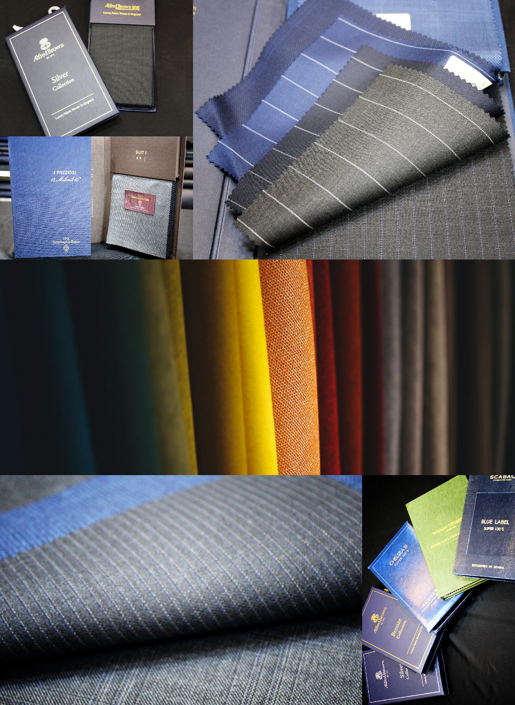

About Us
보니타 테일러가 특별한 이유
Measuring
수트의 사이즈를 잰다는 것은 단순히 수치를 기록하는 것이 아닙니다. 고객님 체형의 장단점 등을 정확하게 파악하는 것이 가장 중요합니다. 고객님의 니즈와 스타일에 따라
수치를 재는 부분이
다를 수 있습니다. 그것이 바로 그로 인해 고객님에게 딱 맞는 수트를 제공하는 보니타테일러만의 수십 년 노하우입니다.
Fabric
맞춤 정장에 있어서 원단 선택이 가장 중요합니다. 수트의 가격을 결정짓는 요소이기도 하기 때문이죠. 디자인 패턴, 원단 혼용률에 따라 가격이 결정됩니다. 보니타테일러는 이 천차만별의 가격대에서도 고객님이 만족할만한 원단 샘플을 많이 보유하고 있습니다. 고객님의 나이대와 사용처, 직위, 개인의 스타일 등을 철저히 고려한 맞춤형 원단을 제안하고 있으며, 높은 만족도를 자랑합니다.
이탈리아 원단
국내 기온과 잘 맞는 하늘하늘한 원단으로 두께가 얇아 착용감이 가볍고, 터치감이 부드럽습니다.
이탈리아 원단의 종류로는 까노니코, 아리스톤 나폴리, 구아벨로, 안젤리코, 에르메네질도, 제냐 등이 있습니다.
영국 원단
원단이 도톰하고 힘이 있어 옷매무새가 단정한 클래식 수트에 가장 어울리는 원단입니다. 다소 거친 재질의 원단입니다.
영국 원단의 종류로는 허더스필드, 알프레드 브라운, 덕데일, 바워로벅, 스카발 등이 있습니다.

Tailoring
보니타테일러만의 품격있는 디자인은 그 어디에 내놓아도 손색이 없습니다. 어떠한 변형된 디자인이어도 고객님에게 딱 맞도록 제작합니다. 원단의 재단, 바느질 한땀 한땀 고객님에게 전달되는 그 마지막 순간까지 최선을 다합니다. 당신이 그 삶의 빛나는 주인공이 되는 그때, 보니타테일러가 함께합니다.
비스포크(수제)
비스포크는 영어로 'Been Spoken For'라는 뜻으로, 장인이 한땀 한땀 손바느질로 만들어낸 정통 수제 정장입니다. 주문자의 원하는 스타일과 체형을 고려하여 주문자만의 패턴을 만들어 드립니다. 상의 심지를 손바느질로 고정하여 부착합니다.
수미주라(반 수제)
수미주라는 평균체형에 기초하여 정해진 패턴에 더해 고객의 체형을 함께 고려하여 사이즈를 맞춰 재단하는 방식입니다. 심지는 접착심지를 사용하여 고정 부착합니다.
보니타테일러는 사람 중심의 경영을 최우선의 가치로 여깁니다. 풍부한 경험과 숙련된 기술로 고객 한분 한분의 기대에 어긋나지 않는 서비스를 제공해드릴 것을 약속합니다. 고객님들께 신뢰받고 사랑받는 회사로 거듭나겠습니다. 감사합니다.
보니타테일러 찾아오시는 길
1호선, 3호선, 5호선 종로 3가역 11번 출구 도보 10분이내
1호선 종로5가역 1번출구 도보 10분이내
종로4가, 종로4가.종묘, 종묘공원, 종로5가입구에서 하차 후
종묘귀금속 백화점 2층
서울특별시 종로구 종로 173 2층 보니타테일러